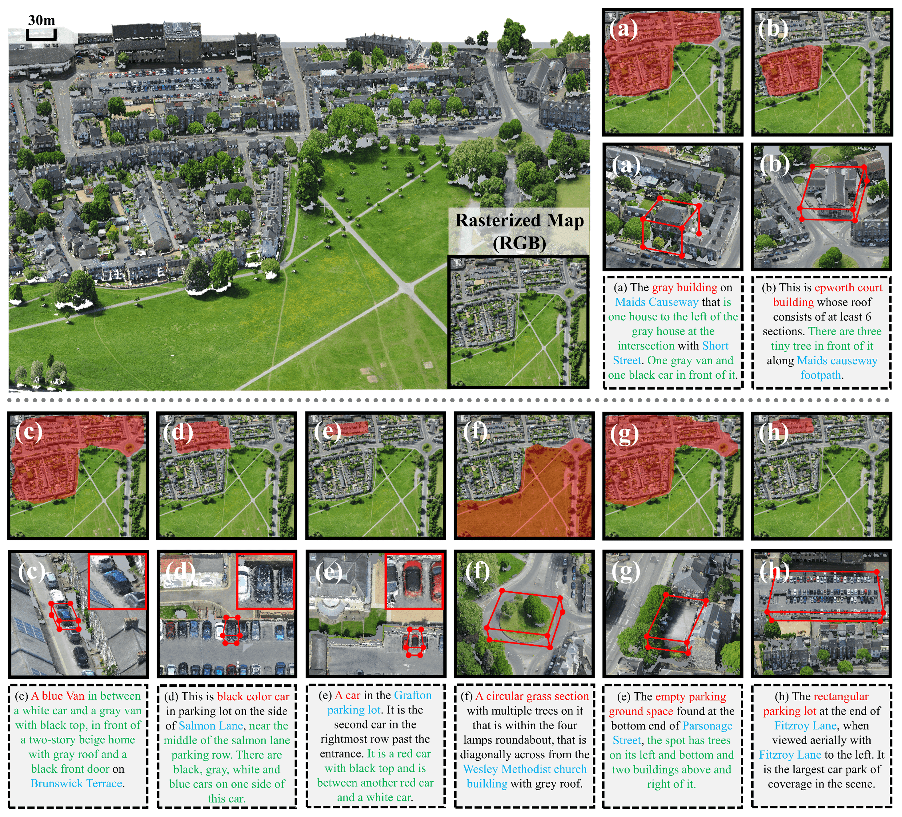
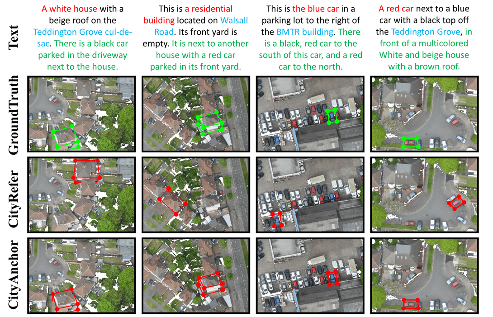

Abstract
3D visual grounding is a critical task in computer vision with transformative applications in robotics, AR/VR, and autonomous driving.
Taking this to the next level by scaling 3D visualization to city-scale point clouds opens up thrilling new possibilities.
We present a 3D visual grounding method called CityAnchor for localizing an urban object in a city-scale point cloud.
Recent developments in multiview reconstruction enable us to reconstruct city-scale point clouds but how to conduct visual grounding on such a large-scale urban point cloud remains an open problem.
Previous 3D visual grounding system mainly concentrates on localizing an object in an image or a small-scale point cloud, which is not accurate and efficient enough to scale up to a city-scale point cloud.
We address this problem with a multi-modality LLM which consists of two stages, a coarse localization and a fine-grained matching.
Given the text descriptions, the coarse localization stage locates possible regions on a projected 2D map
of the point cloud while the fine-grained matching stage accurately determines the most matched object in these possible regions.
We conduct experiments on the CityRefer dataset and a new synthetic dataset annotated by us, both of which demonstrate our method can produce accurate 3D visual grounding on a city-scale 3D point cloud.
City-scale Grounding Results

Qualitative grounding results on the CityRefer dataset.
The projected 2D map is obtained from the city-scale point cloud by top-view projection.
The candidate objects from CLM are represented by red masks.
In the query text, the target object is marked in red, the landmark name is marked in blue,
and the neighborhood statement is marked in green.
Grounding results are shown in red boxes.
Compare to baseline method CityRefer

Qualitative comparisons of the baseline method CityRefer and the proposed framework CityAnchor. The ground truth and predicted boxes are displayed in green and red, respectively.
Although both our CityAnchor and the baseline method CityRefer are capable of understanding simple textual descriptions (e.g., white house, blue car, etc.),
CityAnchor demonstrates a superior ability for accurately grounding guided by complex textual descriptions
(e.g., it is next to another house with a red car parked in its front yard, it is in front of a multicolored White and beige house with a brown roof, etc.).
Acknowledgements:
We borrow this template from A-tale-of-two-features.